Union Minister for Railways
“Implementing the Prime Minister’s vision of Viksit Bharat in mission mode.”
Shri Ashwini Vaishnaw
Minister for Railways
Government of India
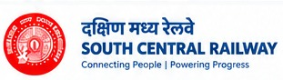
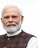
Modern Railways for a Stronger, Prosperous and Inclusive Bharat
General Manager, South Central Railway
Details of service update and schedule changes.
Progress of ongoing projects in South Central Railway.
Additional services for passenger convenience.
Travel guidelines and advisory for passengers.
Redevelopment for World-Class Facilities
New Lines, Doubling & Electrification
Clean Energy & Sustainable Operations
Better Connectivity for Jobs and Growth
Transforming South Central Railway for a Developed India
Strengthen existing infrastructure and passenger facilities.
Major station redevelopment and network expansion.
High capacity network, advanced technology and green operations.
A modern, safe, green and people-centric railway for Viksit Bharat.
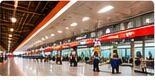
Modern amenities, accessibility and passenger-friendly facilities.
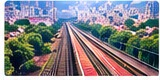
Track renewal, new lines and improved connectivity.
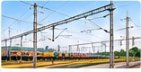
Energy efficiency and sustainable railway operations.
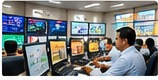
Advanced signalling and safety systems.
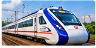
Better, faster and more comfortable travel.
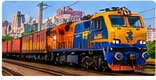
Stronger logistics and industrial connectivity.
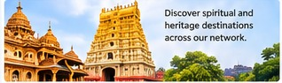
Discover spiritual and heritage destinations across our network.
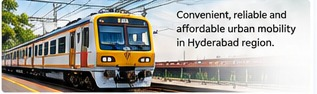
Convenient, reliable and affordable urban mobility in Hyderabad region.
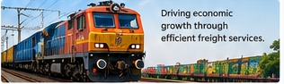
Driving economic growth through efficient freight services.